* GUI란 Graphic UserInterface의 줄임말으로, 사용자와 게임 화면간 소통 역할을 하는 그레픽 유저 인터페이스를 일컫는 말 입니다.
유니티의 GUI는 UGUI라고 부르며 앞으로 Unity → UI 카테고리에 UGUI에 대해 공부한 내용들을 기록해 나갈 예정입니다.
* 개인적인 공부 내용을 기록한 글 이기에, 잘못된 내용이 있을 수 있습니다.
#1 좌표
#2 좌표공간
#3 체력 바 예제
#1 좌표
UGUI에 대해 공부하기 전에 유니티의 좌표계와 좌표공간에 대한 이해가 요구됩니다.
"좌표"란 Scene에 존재하는 물체의 위치를 나타내기 위한 도구로 2D게임은, X,Y 좌표를 3D게임은 X,Y,Z 총 3가지 좌표를 사용합니다.
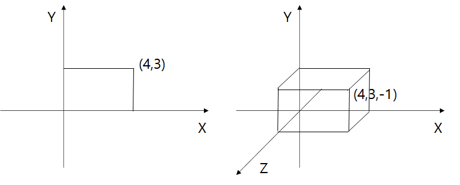
#2 좌표공간
그런데 유니티에는 "월드 스페이스"와 "스크린 스페이스" 2가지 좌표 공간이 존재합니다.
월드 스페이스는 게임 세계에 정해져 있는 절대적인 월드 좌표를 사용 하는 좌표 공간으로, 월드 좌표는 Scene에 배치된 오브젝트를 클릭 시 Inspector 창의 Transform 컴퍼넌트의 출력되는 Position값으로 확인 가능합니다.
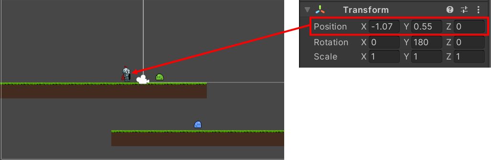
반대로 스크린 스페이스는 상대적 좌표인 로컬 좌표를 사용 하는 좌표 공간으로, 실제 게임 화면 (game 창)의 좌표 공간 입니다. Game 창의 Free Aspect를 눌러 화면의 비율, 해상도를 설정할 수 있으며 프로그래머가 설정한 해상도에 따라서 스크린 스페이스 좌표의 범위가 결정됩니다.
저는 제가 직접 지정한 1920x1080 사용자 지정 비율을 사용했기에, x좌표가 1920 y좌표가 1080으로 설정됩니다.
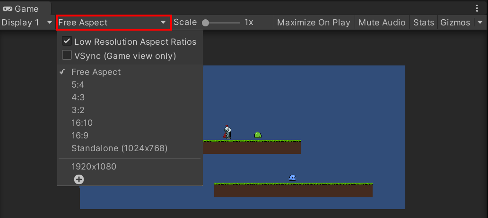 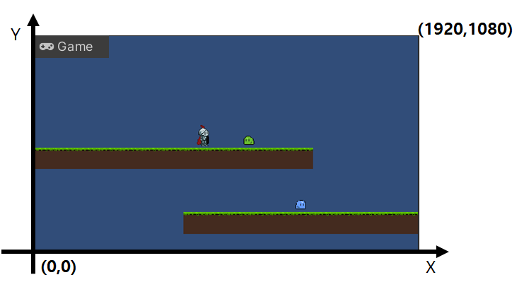
#3 체력 바 예제
그렇다면 왜 굳이 좌표공간이 2개씩이나 필요한 것일까요? 이유는 간단합니다. 플레이어 바로 위에 플레이어를 따라다니는 Hp(체력)바를 구현하고 싶다고 가정해 봅시다. 만약 월드 스페이스 만으로 구현하고자 한다면 플레이어가 위치가 바뀔 때 마다 , Hp바의 위치를 직접 프로그래밍으로 매 순간 설정해 주어야 합니다. 심지어 3D게임이라면 z축 좌표도 함께 계산해 주어야 할 것 입니다.
하지만 스크린 스페이스를 이용하면 간단하게 구현이 가능합니다. 스크린 스페이스는 로컬 좌표 즉, 플레이어를 기준으로 하는 좌표공간 이기에 별다른 좌표계산 없이 플레이어 바로 위에 Hp바를 생성하는 코드를 짜기만 하면 됩니다.
Hierachy 창에서 오른쪽 마우스 버튼을 클릭한 뒤 UI →Canvas 를 만들어 줍니다. 모든 UI는 Canvas 아래에서 만 존재하며, 이와 관련된 내용은 다음 포스팅에서 더 자세하게 다룰 예정입니다. 다음으로 Canvas 아래에 UI → Image 를 클릭해 이미지를 생성해 줍니다.
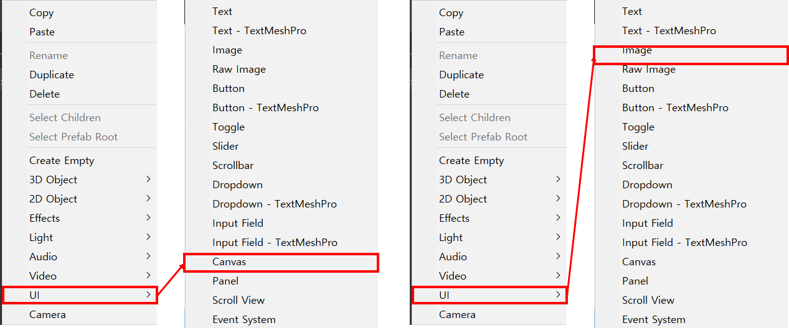
다음으로 이미지의 색깔을 빨간 색으로 바꿔준 뒤, 크기를 적절히 조절하여 플레이어 위에 위치시킵니다.
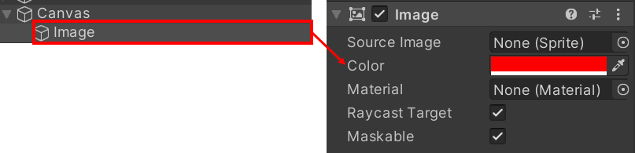 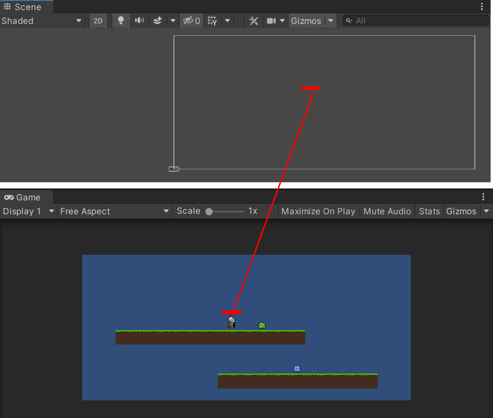
이제 스크립트를 작성해 체력바를 월드 스페이스 (Scene) 에서, 스크린 스페이스 (Game)으로 옮겨야 합니다.
HpBarTest 라는 이름의 스크립트를 만든뒤 Image에 부착합니다.
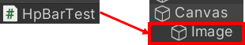
HpBarTest 스크립트에 아래와 같이 소스코드를 작성해 줍니다.
GameObject에는, 플레이어를 넣어 줄 것이고, WorldToScreenPoint() 라는 월드 스페이스에서 스크린 스페이스로 좌표공간을 변경해 주는 유니티 함수를 이용합니다.
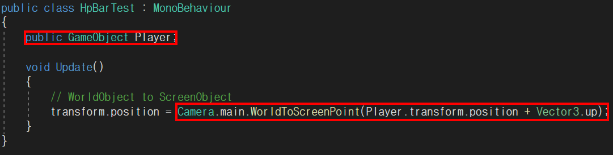 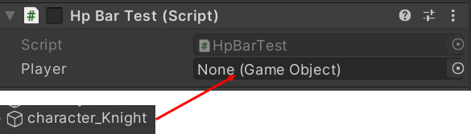
이제 Play 버튼을 눌러보면 다음과 같이 플레이어 위에 체력바가 따라 옵니다.
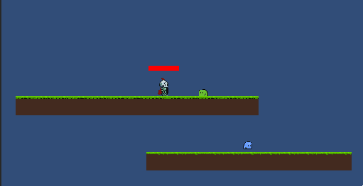
이처럼 월드 스크린 , 스페이스 스크린 간 좌표공간 이동은 매우 빈번하게 사용되는 중요한 개념이니, 반드시 숙지해 두어야 합니다. 다음 포스팅 부터는 본격적으로 UGUI에 대해 알아 보도록 하겠습니다.
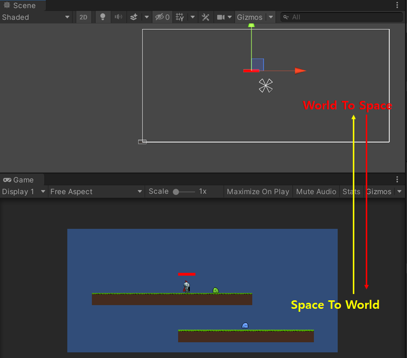